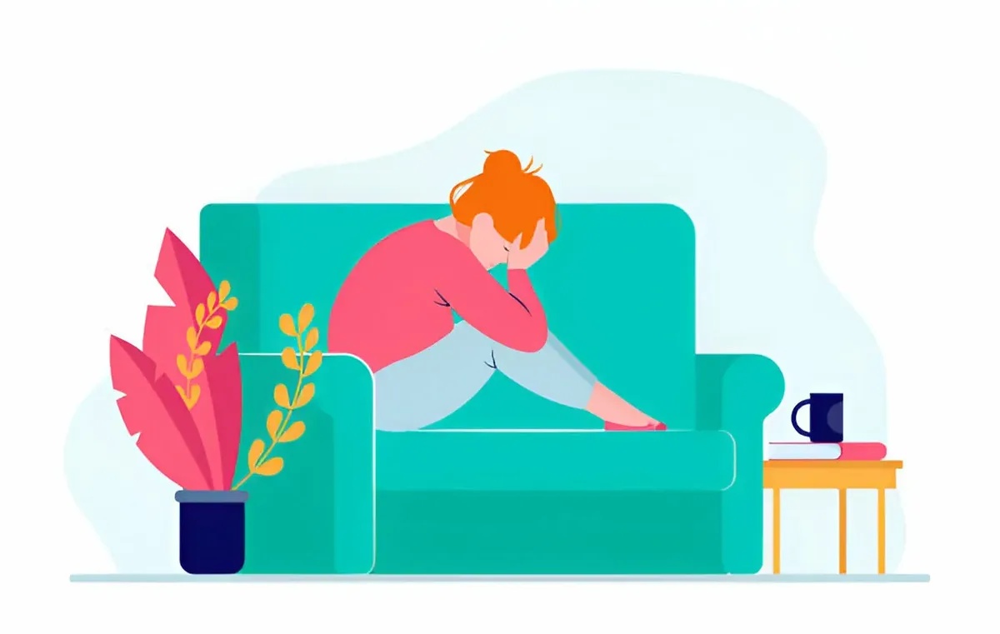

Anxiety Treatment without Medication
There are several non-medication approaches that a psychiatrist might recommend for the treatment of anxiety. It’s essential to consult with a qualified healthcare professional like a senior Psychiatrist for personalized advice and treatment.
Cognitive-Behavioral Therapy (CBT):
CBT is a widely used form of psychotherapy that focuses on identifying and changing negative thought patterns and behaviors associated with anxiety. It helps individuals develop healthier coping mechanisms and problem-solving skills.
Exposure Therapy:
This technique involves gradually exposing individuals to the situations or objects that trigger their anxiety. Through repeated exposure, anxiety responses tend to decrease over time.

Mindfulness and Relaxation Techniques:
Practices like meditation, deep breathing exercises, progressive muscle relaxation, and mindfulness can help calm the mind and reduce anxiety. They promote a state of relaxation and awareness.
Biofeedback:
This method involves using electronic monitoring to gain awareness and control over physiological functions like heart rate, muscle tension, and skin temperature. It can be effective in managing anxiety.
Biofeedback is a therapeutic technique that involves using electronic monitoring to gain awareness and control over physiological functions, such as heart rate, muscle tension, skin temperature, and more. It aims to help individuals learn to regulate these bodily functions to improve physical and mental health. Here’s a closer look at biofeedback:
How Biofeedback Works:
Sensors and Monitoring Equipment:
During a biofeedback session, sensors are attached to various parts of the body to measure physiological responses. These sensors are connected to a monitoring device, which provides real-time feedback.
Feedback Display:
The information gathered by the sensors is displayed on a screen, allowing the individual and the therapist to see and interpret the data in real time.
Awareness and Control: By observing this feedback, individuals can learn to recognize and understand how their body responds to different stimuli or situations.
Training and Practice:
Through guided exercises and techniques provided by a trained therapist, individuals can practice strategies to influence and control their physiological responses.
Types of Biofeedback:
Electromyography (EMG):
Measures muscle tension and can be used to help individuals relax tense muscles, which can be beneficial for conditions like tension headaches, TMJ, and anxiety-related muscle tension.
Thermal Biofeedback:
Monitors skin temperature and can be used to help individuals improve circulation and reduce symptoms related to conditions like Raynaud’s disease.
Galvanic Skin Response (GSR):
Measures the electrical conductance of the skin, which can reflect changes in emotional state and arousal level. It’s used to address conditions related to stress and anxiety.
Heart Rate Variability (HRV):
Focuses on the variation in time intervals between heartbeats. It can help individuals improve heart health, reduce stress, and enhance overall well-being.
Respiration Biofeedback:
Tracks breathing patterns and can be used to teach individuals how to regulate their breathing, which can be helpful for conditions like panic disorders and anxiety.
Benefits of Biofeedback:
- Non-Invasive: Biofeedback is a non-invasive technique that doesn’t involve medication or surgical procedures.
- Customized Approach: Treatment plans are tailored to the individual’s specific needs and goals.
- Effectiveness for Various Conditions: It has been used successfully to manage conditions such as chronic pain, headaches, anxiety disorders, hypertension, and more.
Complementary to Other Therapies Biofeedback can be used alongside other forms of therapy, such as cognitive-behavioral therapy, relaxation techniques, and mindfulness. Biofeedback is generally considered a safe and effective therapeutic tool, but it’s important to work with a qualified healthcare professional who can assess if it’s an appropriate treatment option for your specific needs and conditions.
Diet and Exercise:
A balanced diet and regular exercise have been shown to have a positive impact on mental health. Avoiding excessive caffeine, sugar, and alcohol can also help stabilize mood.
Sleep Hygiene:
Ensuring a regular sleep schedule, creating a calming bedtime routine, and maintaining a comfortable sleep environment can significantly impact anxiety levels.
Stress Management Techniques:
Learning how to manage stress through techniques like time management, setting realistic goals, and practicing relaxation exercises can be beneficial in reducing anxiety.
Social Support and Connection:
Maintaining healthy relationships and seeking support from friends, family, or support groups can provide emotional reassurance and a sense of belonging.
Journaling: Writing down thoughts and feelings can be a helpful way to process emotions and gain insight into triggers for anxiety.
Professional Support and Therapy:
Engaging with a therapist or counselor can provide a safe and confidential space to explore and address underlying issues contributing to anxiety.
Virtual Reality (VR) therapy:
It is an innovative form of treatment that uses immersive virtual environments to address various mental health conditions, including anxiety, phobias, PTSD, and more.
How VR Therapy Works:
Immersive Experience: VR therapy uses specialized headsets to create a three-dimensional, interactive environment that simulates real-life scenarios. This immersive experience allows individuals to feel like they are actually present in the virtual world.
Exposure Therapy: One of the primary applications of VR therapy is exposure therapy. It involves exposing individuals to their fears or triggers in a controlled and safe virtual environment. This can be particularly effective for treating phobias, PTSD, and anxiety disorders.
Customization: Therapists can customize the virtual environment to match the specific triggers or situations that a person needs to confront. This level of customization allows for a highly personalized treatment approach.
Real-time Feedback: VR technology can provide real-time feedback to both the therapist and the individual undergoing therapy. This allows for immediate adjustments and assessment of progress.
Benefits of VR Therapy:
Safe and Controlled Environment: VR therapy provides a safe space for individuals to confront their fears or anxieties without the risks associated with real-world exposure.
Gradual Exposure: Therapists can control the intensity and duration of exposure, allowing for a gradual and systematic desensitization process.
Increased Engagement: The immersive nature of VR tends to be more engaging than traditional forms of therapy, which can enhance the effectiveness of the treatment.
Accessibility: VR therapy can be particularly beneficial for individuals who have difficulty accessing or engaging in traditional forms of therapy due to physical limitations, distance, or other factors.
Versatility: VR therapy can be used to address a wide range of mental health conditions, including anxiety disorders, phobias, PTSD, social anxiety, and more.
Reduced Stigma: Some individuals may find it easier to engage in VR therapy because it feels less stigmatized or intimidating compared to traditional face-to-face.
It’s crucial to work closely with a mental health professional like a good psychiatrist Dr. Gorav Gupta to develop a tailored treatment plan that suits your specific needs and circumstances.